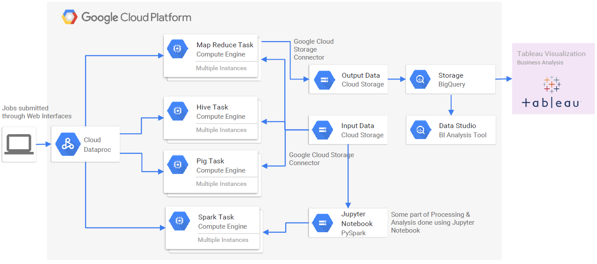

Problem
Investors and traders need stable ways to reason about stock movements, but price behavior can be influenced by historical trends, company news, and public opinion.
Cloud Data | GCP | Analytics
A cloud analytics project exploring stock market movement patterns through big data processing, storage design, and visualization with Google Cloud and BI tooling.
Investors and traders need stable ways to reason about stock movements, but price behavior can be influenced by historical trends, company news, and public opinion.
The project used cloud processing and visualization to analyze previous stock data, summarize research techniques, and present patterns through data storytelling.
The pipeline combined Google Cloud processing, cloud storage, BigQuery-style analytical storage, and visualization workflows through Data Studio and Tableau.
The result was a documented analytics workflow showing each step of cloud processing, data storage, visualization, and scope for further improvement.

The project is a useful bridge between software engineering and data platforms: ingestion, processing, analytical storage, visualization, and the ability to explain technical systems through business-facing outputs.
Open legacy project archive